Comece por criar uma cena simples com um cubo e um plano. O plano irá comportar-se como sólido e estático. O cubo irá ser sólido e dinâmico. Para perceber melhor o efeito da simulação, desloque ligeiramente o cubo no eixo Z. Se quiser, pode também rodar ligeiramente o cubo.
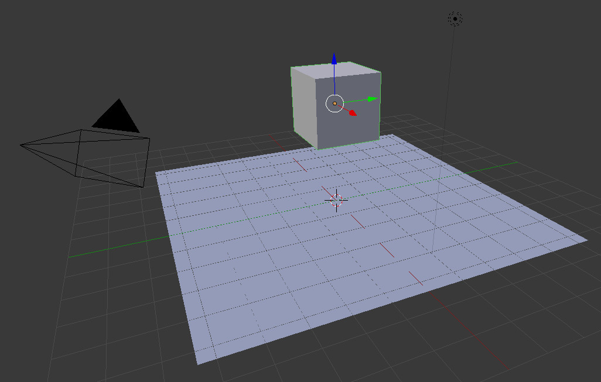Na barra de ferramentas, aba Physics, encontrará as ferramentas principais para construir a simulação. Selecione o cubo e clique em Add Active. Selecione o plano e clique em Add Passive.
Se ativar a simulação com Alt+A já deverá ver o resultado.
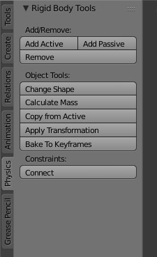Os restantes botões de Change Shape, Calculate Mass, Copy from Active, Apply Transformations, Bake to Keyframes e Connect (Constraints) permitem configurar rapidamente alguns parâmetros da simulação.
Change Shape: permite alterar rapidamente a forma utilizada para calcular a colisão. Este parâmetro pode também ser alterado no painel de propriedades (veja abaixo).
Calculate Mass: Apresenta uma lista de materiais/objetos com respetivo valor de massa pré-definido. Este parâmetro pode também ser alterado no painel de propriedades (veja abaixo).
Copy from Active: Quando selecionamos vários objetos, o último selecionado é o Active Object. Este botão permite copiar as definições de um objeto (o último selecionado) para múltiplos objetos.
Bake to Keyframes: Fixa a animação de simulação transformando-a em keyframes. É útil para otimizar o desempenho e guardar a animação produzida. Ou seja, após pressionar este botão, a animação já não é resultado da simulação mas sim de keyframes.
Connect (Constraints): permite criar relações adicionais entre objetos que pertencem à simulação.
Type (escolher entre Active e Passive)
Dynamic (se o objeto participa na simulação ou não).
Animated: permite controlar objeto com sistema de animação, inserir keyframes.
Mass: massa do objeto, utilizada no cálculo da simulação.
Shape (forma utilizada para calcular colisão; Box, Sphere, Capsule, Cylinder e Cone são as melhores em termos de performance; Convex Hull é uma aproximação convexa mais real à forma do objeto; Mesh permite simular objetos côncavos.);
Friction (resistência do objeto ao movimento); Bounciness (elasticidade); Sensivity Margin (margem de reconhecimento da simulação);
Collision Groups (objetos em Collision Groups diferentes não colidem entre si).
Type (escolher entre Active e Passive).
Animated: permite controlar objeto com sistema de animação, inserir keyframes.
Shape (forma utilizada para calcular colisão; Box, Sphere, Capsule, Cylinder e Cone são as melhores em termos de performance; Convex Hull é uma aproximação convexa mais real à forma do objeto; Mesh permite simular objetos côncavos.);
Friction (resistência do objeto ao movimento); Bounciness (elasticidade); Sensivity Margin (margem de reconhecimento da simulação);
Collision Groups (objetos em Collision Groups diferentes não colidem entre si).
Configure plano como Passive.
Configure cubos como Active.
Configure esfera como Active mas ative opção Animated. Insira keyframes na esfera de modo a que esta atravesse a parede de cubos.
Alt+A para ver o resultado.
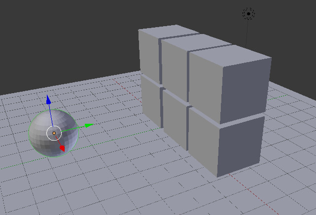Insira um plano e transforme o cubo original numa forma próxima da de uma peça de dominó.
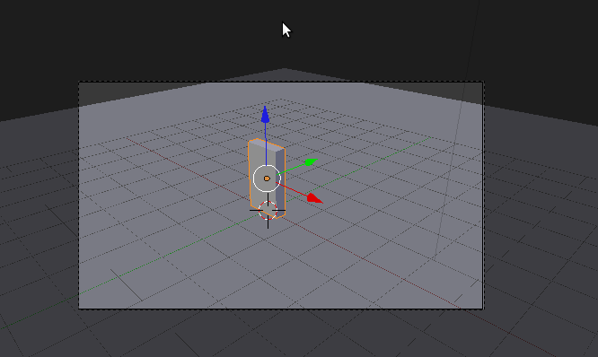Com o objecto seleccionado, faça Apply à Location, Rotation e Scale para aplicar definitivamente todas as alterações que fez à localização, rotação e escala do objecto original. Faça Origin to Geometry para recalcular a Origin para o centro da malha.
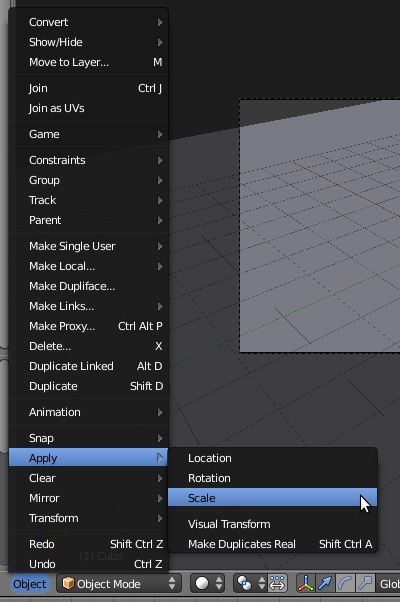 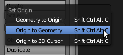Active o modo Blender Game e aceda ao painel Physics.
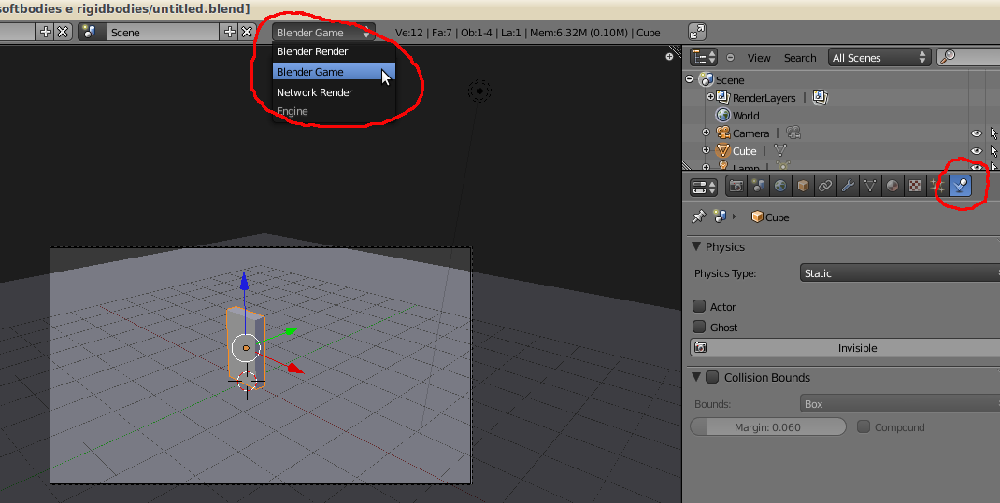Com a peça de dominó seleccionada, escolha o tipo Rigid Body e Collision Bounds do tipo Box.
O objecto vai ficar como que envolto numa “caixa” ou campo de forças que vai ser utilizado para detectar a colisão entre objectos. A dimensão desse “campo” é definida através do parâmetro Radius (se alterar o Radius, irá ver que o círculo que envolve agora o objecto diminui/aumenta). O círculo não define a verdadeira forma do “campo de forças”, esta é definida pelo parâmetro Collision Bounds, apenas identifica a extensão/dimensão. Mass define a massa do objecto, a quantidade de força requerida para mover um objecto (mais massa = necessário maior força para mover objecto). Existem outros tipos de Bounds (limites): Box (caixa), Sphere (esfera), Cylinder (cilindro), Capsule (cápsula, cilindro com arestas arredondadas), Cones (cones), Convex Hull e Triangle Mesh (para formas mais complexas). Escolha o tipo de Bounds que mais se adequa ao seu objecto.
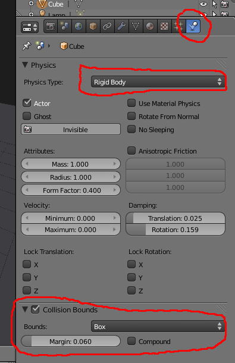O parâmetro Margin define a dimensão de uma margem extra que envolve o objecto para detecção de colisões. Se o objecto tiver uma margem muito alta ou um Radius maior do que a malha, ele irá reagir à colisão antes que veja a mesma acontecer... como se algo invisível colidisse com o objecto.
Duplique o objecto e construa uma fila de peças. Aplique uma ligeira rotação à primeira peça da fila.
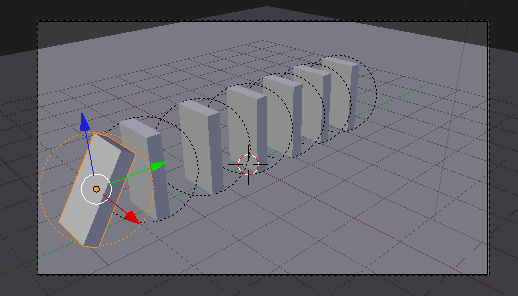Em Object Mode, clique em P para activar o Game Engine e ver o resultado. Para sair do Game Engine, clique no ESC.
Proceda aos ajustes que entender necessários (i.e. mover as peças de local, adicionar mais peças, etc.). Não altere a geometria (i.e. escala, disposição da malha)! Estas modificações devem ser feitas antes de aplicar a physics Rigid Body.
Quando estiver satisfeito com a animação, active a opção Record Animation (para converter a simulação do Game Engine em curvas com keyframes). Clique em P, clique em ESC quando acabar a animação. Agora, se for ao Graph Editor deverá ter algo semelhante à imagem abaixo :) e pode renderizar como uma qualquer outra animação por keyframes!
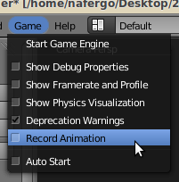 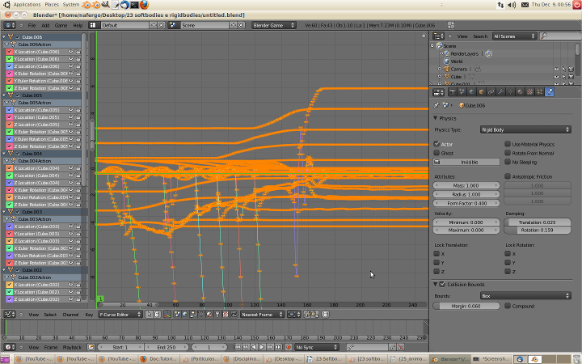